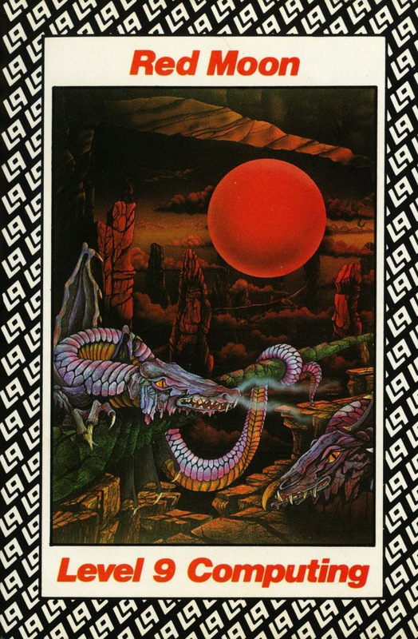
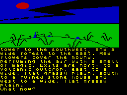

Red Moon


{kind=link}

| Publisher: | Level 9 |
| Price: | £6.95 |
| Year: | 1985 |
| Source: | CRASH, Issue 20 |

After an Emerald Isle comes a Red Moon and I’ve spent about a week kicking my heels, or to be more precise, a red balloon around the house waiting for Level 9’s latest masterpiece of competent, commercial programming to drop through my letter box. (The red balloon, with Red Moon written on it, was a piece of slick promotion from the canny Austin team which arrived some time before the actual game). And the verdict? — I can keep a balloon aloft for several minutes without tiring — longer if I first fill it with helium. Oh!! It’s the game you want to know about? — oh, well, that’s very absorbing too!
Let’s try that one again — and the verdict? — well, it’s another humdinger and a dead ringer for popular acclaim. The type-ahead is marvellous having been refined to enable you to go way ahead of the program without hardly looking up. The speed of the whole thing seems much more up-tempo than Emerald Isle — you can really whizz through this one. Combat is an essential element with weapons and armoury affording protection but the major new theme is one of magic, or Magik as it is called in this game, with numerous spells to add that little bit of spice. Indeed, Level 9 call Red Moon their first magical adventure.

With this game Level 9 have laid all that science future stuff to one side and produced a more fantasy/mythical monsters sort of environment. The story too, is mainstream fantasy adventureland.
An old storyteller addresses a crowd in a marketplace. She tells a tale of how once their moon was not dim but glowed with a cold crimson light. After many battles with the sun, the moon became pale and ashen and its light had little power. The all important Magik faded with the moon. Mythical beasts, which once ventured abroad by day, were restricted to the night, and more recently, to the full moon. Something had to be done to stop Magik failing altogether. And so it was that the Red Moon Crystal was made as a new source of Magik. While too weak to illuminate the world it did illuminate the kingdom from its position in the Moon Tower in Baskalos. Sadly, the moon crystal was stolen and Baskalos almost degenerated into barbarism. The story of how one brave magician recovered the crystal and saved the country is the story enacted by the player in this game.
Loading up Red Moon the presentation is up to the same high standard of Emerald Isle, though the scrolling text with no gaps or colour changes to distinguish between prompts, input and descriptions looks just a little cluttered. However, this is a small niggle for such a well turned out game. As I’ve said, the type-ahead, allowing input while the picture forms, or for that matter, while the program works on anything, is super — not only entertaining but surprisingly useful. The need to type in only the first three letters of a verb or noun ensures this speed never flags.
The structure of the plot constantly places you in the rather familiar bind of having to drop something in order to pick up something; you could almost say in the time honoured fashion. As ever, deciding which object to drop is far from easy and often entails retracing steps. However, the game makes amends by politely offering many lives before the player has to resort to starting a new game — a super friendly gesture to the battle-weary adventurer.
As you might expect in a Level 9 game the location descriptions are long, detailed and superbly crafted. Take this one which appears early on: ‘You are on a grassy mound which rises a few metres above a sea of waving grass. The plain seems to go on forever, broken only by three landmarks: a small, steeply pointed volcanic mountain to the north; a thin, marble tower to the southwest; and a wide forest to the east. Red flowers cover the mound, perfuming the air with a smell of magic. Exits are north to a volcanic outcrop, east to a wide, flat grassy plain, south to a ruined stone house and west to a wide flat grassy plain.’ The ruined stone house mentioned here seems an ideal place to cache your loot.
Combat and Magik are themes which run throughout the game. Combat involves you pitting your strength represented by hit points against your assailant’s, whether rat, guardian or cloaked statue or whether aided or abetted by armoury such as swords, daggers and magical cloaks. The combat routines are somewhat imposed upon the game to the extent that a fallen combatant cannot be examined or play any further part in the game (excluding, that is, the ghost of the rat which comes back to fight again). Having slain the rat EXAM RAT gives ‘You can’t see an enormous rat!’. Now that I’ve mentioned the examine command it should be noted that in this respect this game is somewhat atypical compared to other Level 9 games. Examine only seems to work when barking up the right tree — otherwise the range of responses is well down on the norm, although a few funny replies survive nonetheless.
The Magik is an integral part of Red Moon. To cast a spell the format CAST ‘spell name optional target’ is used, eg CAST ESCAPE or CAST SCOOP NORTH. To cast a spell you must possess the focus for it and the objects needed are scattered liberally throughout the adventure. For example, to cast ESCAPE you need the dulcimer, a percussion instrument struck with a pair of hammers or a goose quill, while the SNOOP spell, which allows you to look into a nearby room, requires a pearl.
Red Moon is a highly competent adventure program which neatly walks the tightrope between absorbing plot and commercial, memory-guzzling colourful graphics. It displays many features to ensure this game keeps Level 9 at the top — the superb type-ahead, friendly input, imaginative graphics and long, descriptive prose. The combat routines and Magik spells add much to the player’s interest but where this game really excels is in its storyline; as the game unfolds it becomes more and more clear a great deal of thought has gone into its construction. Red Moon is computer entertainment at its best.
COMMENTS
| Difficulty: | A long adventure which is quite easy to play |
| Graphics: | On every location, generally good |
| Presentation: | Good choice of colours but text cramped |
| Input facility: | Some way beyond verb/noun |
| Response: | Reasonably fast |
| Special features: | Type-ahead allows program to always accept input regardless |
| General rating: | Has an appeal for everyone |
| Atmosphere: | 9 |
| Vocabulary: | 9 |
| Logic: | 9 |
| Addictive Quality: | 9 |
| Overall Quality: | 9 |
| Overall: | 9 |